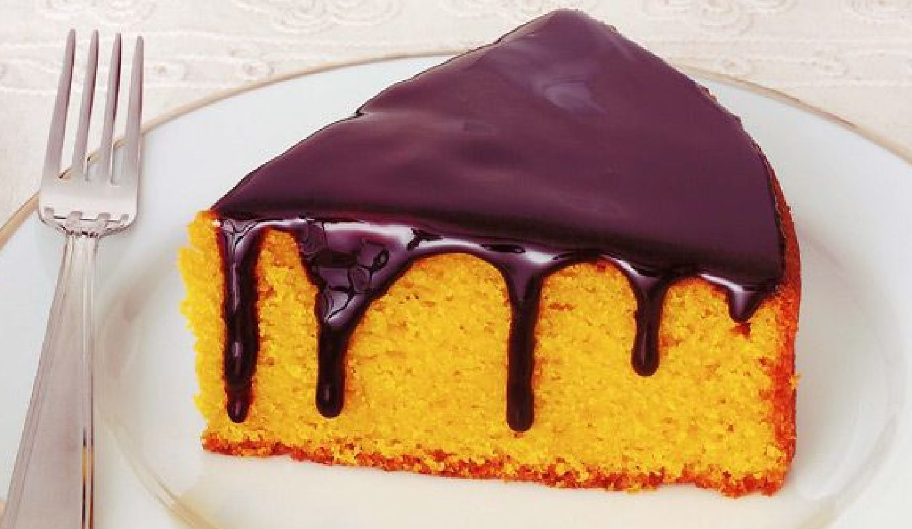

ajajjajajajajajajaajajjajajajajajajaajajjaja jajajajajaajajjajajajajajajaajajjajajajajajajaajfjngkwsnglkwnglkwnglkwnglwknglkwnglwk nglwknglwknglkajjajajajajajajaajajjajajajajajaja
Dificuldade: Fácil / 68 Visitas / 5 Estrelas / Porção: 5 pessoas
Desenvolvido por César Jr. 1TDSJ - CopyRight FIAP © 2019